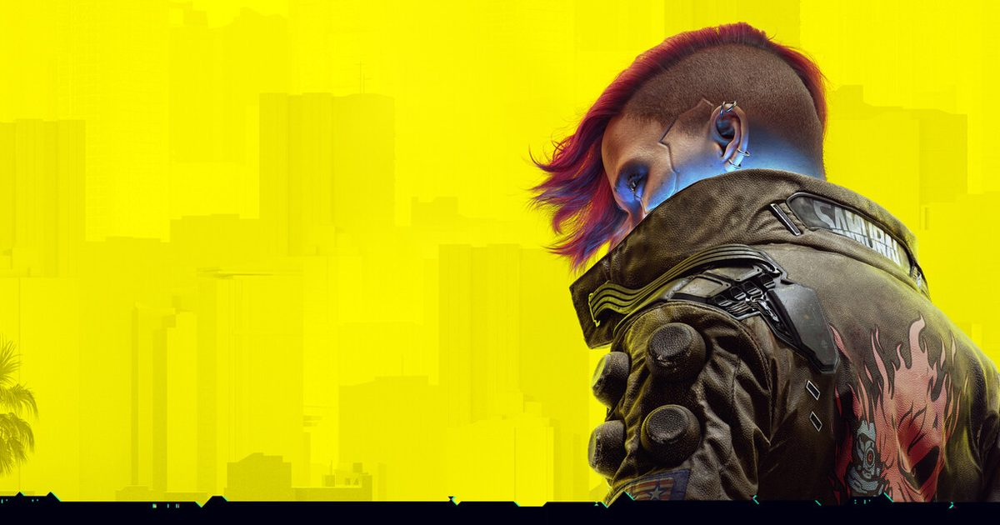

2026-10-21 · 单机深读
《赛博朋克：边缘行者 2》10 月 20 日在 Netflix 全集上线，两天后的 10 月 22 日，一款六年前发售的游戏会跟着拿到一个免费大版本更新——CDPR 管它叫 Edgerunners 2 Update（2.5）。官方博客只写了三件事：义体自定义、全新的双持战斗风格、「以及更多」。真正的清单要等今晚（北京时间 23:00）的 REDstreams 直播，而一份提前泄露又被撤回的创作者视频，已经把大半内容摊在了桌面上。
这次更新的分量不在「又送了几件衣服」，而在它的身份：CDPR 此前不止一次公开表示 2077 的更新工作已经做完，团队重心转向《巫师 4》和赛博朋克续作——上一次大版本 2.3 是 2025 年 9 月。这次回来不是修 bug，是加系统。

先把信息分层摆清楚，因为这两层的可信度不同。
官方已经确认的部分：
泄露的部分（未经官方确认，需以直播为准）：一位提前拿到试玩资格的创作者把讲解视频误设为公开，随后撤回，Push Square 等媒体在撤下前做了记录。清单包括——
双持是 2077 玩家社区里最古老的诉求之一——它在 2020 年 12 月发售前被砍掉，之后六年里每隔几个月就要被翻出来吵一次。所以「终于有了」本身是新闻，但真正值得看的是它给的边界：只限动力手枪与左轮，且要花一个 Cool 树的 perk 去解锁。
这不是保守，这是算过账的。2077 在 2.0 版本（2022 年）动过一次大手术，把 perk、战斗和义体系统整个重写；那之后又叠上《往日之影》的资料片内容，平衡是靠大量数值调校才压住的。如果 2.5 直接开放「任意两把武器」，步枪与霰弹的双持会瞬间把这套平衡炸掉——弹药消耗、射速上限、控场收益三项会同时失控。
把双持锁在手枪类，还有一个更聪明的地方：手枪在 2077 里一直是相对冷门的武器类别。刀锋流有螳螂刀和一系列专属 perk，步枪流和霰弹流各有成型路线，科技武器有蓄力穿透，唯独手枪长期处在「能用但没什么理由刻意用」的位置。给手枪一条别的武器拿不到的专属成长线，是给冷门品类发身份证，而不是给所有人的伤害数字加一个开关。这两种设计思路看起来都在「加东西」，长期效果完全相反。
代价也要说清楚：一旦双持成立，弹药经济、暴击收益、冷却节奏都要重算。原本堆刀锋或快速破解、只在副武器槽随手塞把手枪的 build，现在要重新考虑要不要往 Cool 树投入；而二级 perk 的具体数值一天没公布，「双持流」的真实强度就一天不能下定论。
答案的一半写在 2022 年。那年《边缘行者》第一季上线后，2077 的在线人数出现了一次极其罕见的「发售两年后反弹」，第一季首周录得近 1500 万小时观看，并在 2023 年的第七届 Crunchyroll Anime Awards 拿下年度动画；CDPR 当时同步往游戏里塞了动画相关武器与装备（包括 David Martinez 那件夹克）。这套「动画带人回游戏、游戏替动画造势」的双向导流，CDPR 试过一次，而且效果远超预期。这次的排期几乎是那次的复刻：动画 10/20 上线 → 10/21 直播 → 10/22 更新。
答案的另一半是现实。在《巫师 4》和赛博朋克续作（Orion）都还远的情况下，2077 是 CDPR 手里唯一能立刻变现、且变现成本极低的资产。一次免费更新的获客效率，比任何一轮买量都高；它同时还能在财报电话会上被反复提起。所以这次更新的真实身份是双重的——对玩家是补丁，对公司是运营动作。
也正因为如此，有一个可能性必须提前说出来：2.5 很可能就是 2077 的最后一个大版本。更新节奏从一年一个变成一年多没有，再回来一次且明确挂着联动的名义，这符合「收尾型更新」的典型形状。往后如果再有内容，触发条件大概率还是「又有一部动画或衍生作品要上」——这跟「游戏还在被长期运营」是两回事。
泄露清单里最值得单独拎出来讲的是支线 「Clampdown」——它明确设定在《边缘行者》第二季之前。
这一步的意义在于它改变了联动的层级。过去大部分游戏 × 动画联动停在「给你几件衣服和一把武器」，玩家拿到的是物品，情节上两边各说各的；而一个被锚定在动画时间线之前的任务，意味着 V 的行动会成为动画观众理解第二季的前置材料。对只看过动画的人来说，这是个入口；对只玩游戏的人来说，这是把一部没看过的动画塞进了自己的任务列表。
这类「叙事桥」设计最怕的是两边都做浅：游戏里的人物一笔带过，动画里也从不回应。2022 年那次的处理其实也只能算半成功——夹克很好看，但游戏本体几乎没有出现动画角色的实质性戏份。这次 Clampdown 能不能补上，取决于任务长度和文本密度，而这恰恰是泄露里唯一没被说清的部分。
主机端通过 mod.io 支持 Mod，但启用 Mod 会让该存档的奖杯失效。这条在《巫师 3 重制版》上用过一次，现在被搬到了 2077。
对主机玩家来说这是真正的分水岭。Mod 生态是 2077 在 PC 上长盛不衰的核心原因之一——画质、载具、服装、玩法改造，社区产出的内容量远超任何官方补丁。把它搬进主机，等于把这份长尾资产开放给另一半玩家；但奖杯禁用这个代价被明确转嫁给了玩家自己，官方不帮你兜底。
顺带说一句这次更新里最容易被忽略、却最诚实的一批条目：FOV 滑条、按周目分文件夹的存档、仓库物品筛选、PS5 HDR 修复。它们不是内容，是「六年来一直被抱怨、一直没修」的体验债。一个准备收尾的项目愿意回头把这些做完，比再加十件衣服更能说明态度。当然，也可能说明它终于要把这个项目归档了。
| 深度档位 | 做什么 | 玩家拿到什么 | 留存效果 |
|---|---|---|---|
| 外观档 | 服装、武器皮肤、车辆涂装 | 截图素材，不影响玩法 | 一周内热度消散 |
| 内容档 | 支线任务、电台、剧情碎片（如 Clampdown） | 一段新的可玩时间，叙事上接入原作 | 能拉回已流失玩家，但玩完即走 |
| 系统档 | 新 perk 与战斗风格、义体外观系统、Mod 支持（本次 2.5） | 新的 build 空间，改变「这游戏能怎么玩」 | 能重启一轮开荒，也是三档里成本最高的一档 |
2.5 罕见的地方在于它三档全占了。这也是为什么它是一个「值得回来开新档」的更新，而不只是一个上线当天截图发完就走的更新。
我们的评分：8.5 / 10（免费更新的完成度与诚意评分）
给分在三处：双持给了明确边界而不是无脑放开、义体自定义补上了六年里最大的一个「为什么不能」、以及把体验债一并还了。扣分在 Switch 2 版延后且跨平台被暂时关闭，以及完整数值要等直播才揭晓。
我们的观察
CDPR 正在示范一种很少有人做得成的模式：把一个单机游戏当平台运营，但不用服务型游戏那套抽卡与赛季。它的更新节奏完全由外部事件驱动——一部动画上线，就回来一次。这种模式的好处是每次回来都有明确理由和现成流量，坏处是中间的空窗期没有任何东西。玩家要接受的是「它不会一直陪着你，但它每次回来都带真东西」。
我们的观点
这次我最在意的不是双持本身，而是 2.0 那次重写终于开始产生复利。2022 年 CDPR 把 perk、战斗、义体系统推倒重做时，外界普遍认为这只是为了止损；三年后，一个六年前被砍掉的功能能以 perk 的形式干净地接回来，说明那次重做留下的地基是真的。反过来说，如果 2.0 没做过，双持只能以「外挂式的新武器类别」出现，那才是灾难。
我们的案例对比
同样是「给老游戏加一个玩家喊了很多年的功能」，行业里通常有两种做法：一种是补偿式——玩家要什么给什么，一口气全放开，短期社区狂喜，三个月后平衡崩掉（多个开放世界射击游戏的双持 Mod 生态就是典型）；另一种是建构式——像 2.5 这样先划定适用范围，再围绕它配一套二级 perk，让新机制长进原有系统里。前者会得到更好的首日截图，后者会得到更长的游戏寿命。
我们的实验
编辑部建议分三步验证双持的真实价值：第一步，在更新前用手枪 build 打一次同一处高难据点，记录通关时间与弹药消耗；第二步，学完 Double Trouble 后只改这一个变量再打一次，看差额是来自伤害还是来自节奏（比如不用切武器了）；第三步，才是把二级 perk 点满做完整对照。三步分开做，你就能知道这个 perk 到底是在加数值，还是在改手感——这两件事对「值不值得重开一档」的结论完全不同。
2.5 最值得记住的不是「V 终于能拿两把枪」，而是 CDPR 在一个已经宣布收尾的项目上，仍然选择加系统而不是加皮肤。双持只给手枪是克制的，义体自定义是六年来最该补的那块拼图，主机 Mod 支持是把 PC 的长尾资产开放给另一半玩家，而 Clampdown 把游戏接成了动画的前传——四件事指向同一个判断：这不是敷衍的联动，是一次认真的收尾。至于它是不是 2077 的最后一个大版本，我的看法是：大概率是。正因为如此，这个版本值得你回去走一趟。